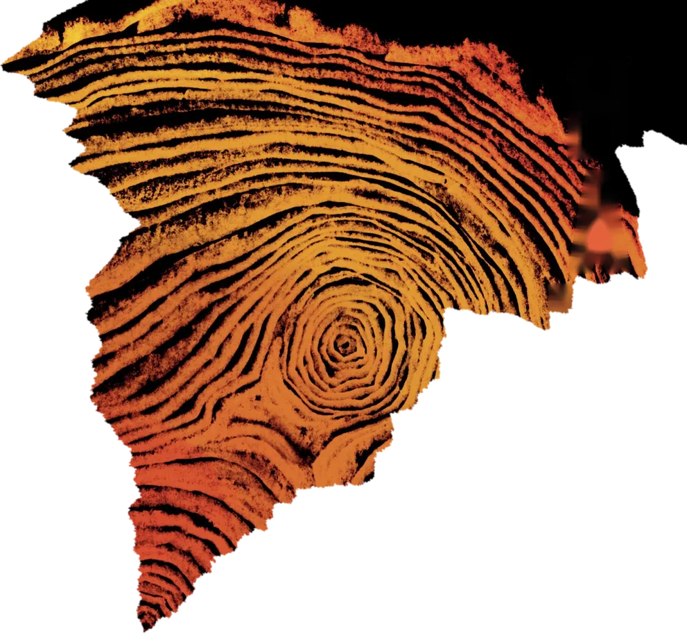
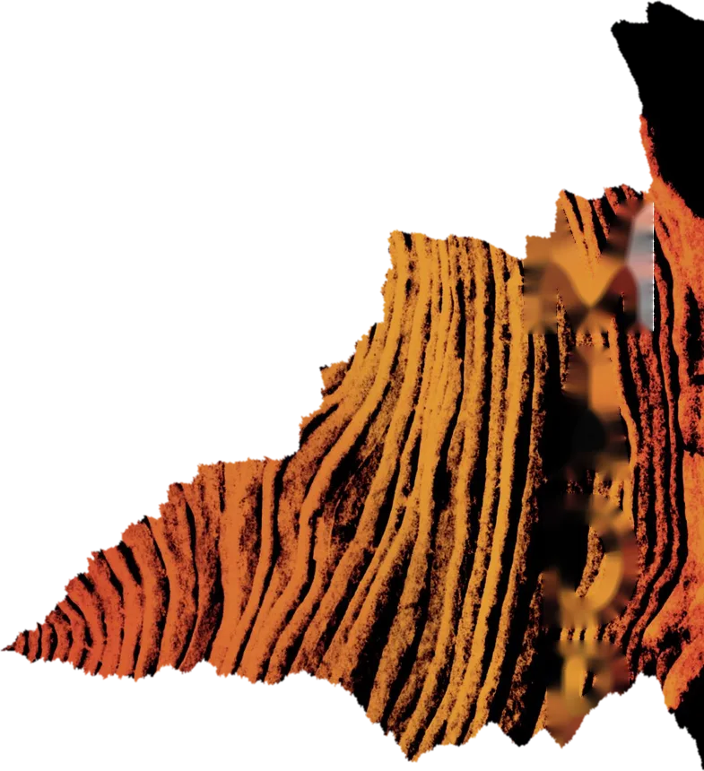
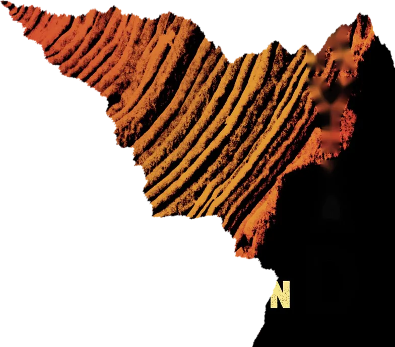
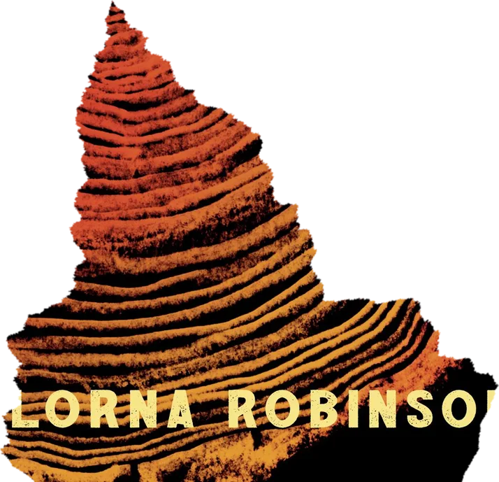
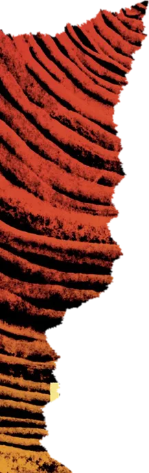
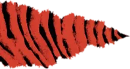
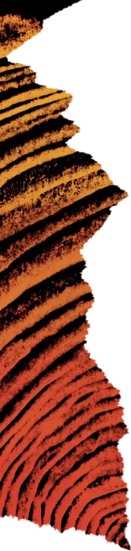
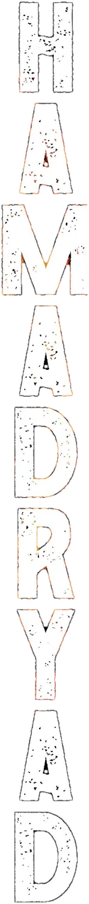
Lorna Robinson
Hamadryad. A bold new programme to pair every citizen with a tree.
Oread. Two hundred years later, deep in the tunnels beneath London, a community has been growing which rejects the Charter.
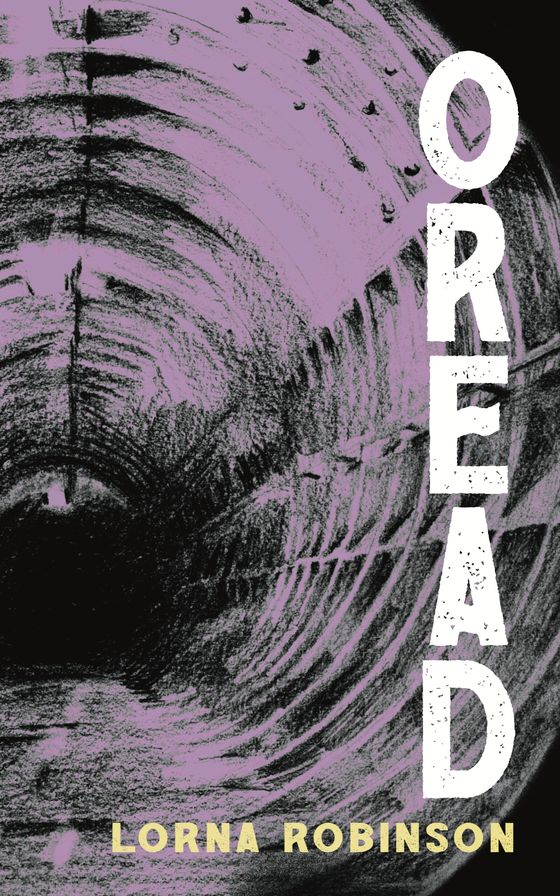
The world beneath the trees
Two hundred years have passed since the UK government instituted a bold new programme to pair every citizen with a tree. Known as the Hamadryad Charter, it created vast national forests, major civic festivals and a whole new system of personal names.
Deep in the tunnels beneath London, a community has been growing which rejects the Charter. Tensions between the two societies are rising sharply. When a lone Hamadryad finds his way into the underground, a terrible tragedy threatens to unfold.
Oread is the sequel to Hamadryad, but can be read on its own.
Hardback, paperback and ebook. Soon in Blackwell's, and from me at the Oxford Indie Book Fair.
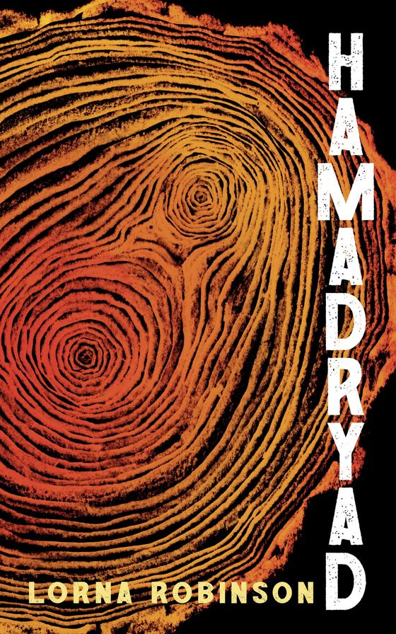
Where it began
In a climate-ravaged future UK, the Green Party is elected, and their bold young leader institutes a national programme to restore ancient traditions by pairing trees with humans. From huge civic festivals to different personal names, a new framework is put in place overnight.
In the aftermath, a small community forms in the abandoned tunnels of the London Underground which questions the changes, while others embrace the new order with a cult-like intensity. Hamadryad follows three very different people and their trees.
Illustrated throughout by the artist Lydia Hall. Hardback, paperback and ebook.
"A smart updating of classical hamadryads or tree-spirits."Professor Stephen Harrison, Professor of Latin Literature, University of Oxford
The tunnels are calling
-
Sat 14 Nov
Oread launch and mystery artefact trail
2.30 to 5pm at Cheney School, Oxford. Arrive any time at main reception and follow the trail through tunnel-like corridors in the Rumble Museum to the Iris Classics Centre: drinks, books, chat, creative writing for anyone who wants a go, and maybe a reading. Tunnel travellers of all ages are welcome.
Email to take the journey -
Sun 22 Nov
Oxford Indie Book Fair, table S33
Oread and Hamadryad will be on my table. Come and say hello.
Also on the shelf
-
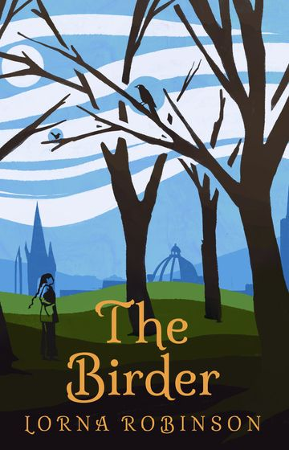
The Birder
An Ovid-inspired novel set in an alternate Oxford where people transform instead of dying.
Illustrated with linocut prints of birds around the city: St Giles' Cafe, Gloucester Green, Martyrs' Memorial, Lady Margaret Hall, the C.S. Lewis Nature Reserve.
Order The Birder -
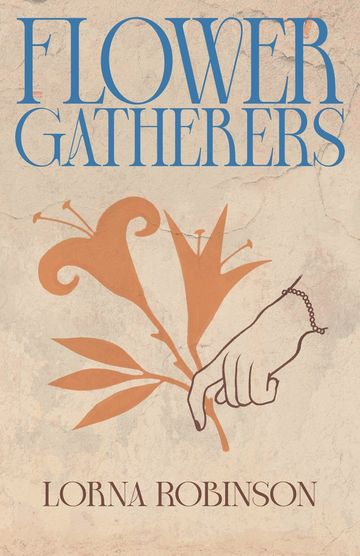
Flower Gatherers
Two women separated by millennia, bound together by the mysteries of the Minoan world.
Key chapters are set in the Ashmolean Museum's Aegean World Gallery, with illustrations in each chapter by Lydia Hall.
Order Flower Gatherers -
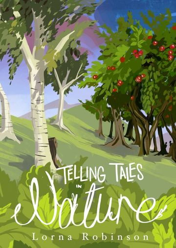
Telling Tales in Nature
Greek myths retold from the perspective of the spirits of plants.
All four books in one: Underworld, Forest, Orchard and Meadow Tales, with botanical drawings by Lydia Hall.
Order the compendium
Hello, I'm Lorna
My fascination with myths and stories began with The Usborne Book of Greek Myths and Legends and Ulysses 31. Some years later, I studied Classics at Lady Margaret Hall, Oxford. A chance encounter with a Gabriel García Márquez novel in my finals year made me curious about how much it shared with Ovid, and that curiosity became a doctorate on magical realism at University College London.
In 2006 I started a charity called the Iris Project and Iris magazine to bring Classics into state schools. I now run Latin and Greek projects in schools across the UK, the Iris Classics Centre, and the Rumble Museum at Cheney School.
- The Iris Project: a registered classics outreach charity
- The Rumble Museum: the first accredited museum in a state school
- Also written: Telling Tales in Latin, Distant Lands and Telling Tales in Greek, and Gabriel García Márquez and Ovid: Magical and Monstrous Realities
Come and write with us
The Classics and Creative Writing Café meets once a month, at the Iris Classics Centre at Cheney School or St Alban's Church on Charles Street, Oxford.
Bring an idea, have a go at writing, or just read and chat. Each session has a classical theme as a prompt, all genres are welcome, and it's for ages 14 to adult. There are drinks and snacks (donations towards costs are welcome). Come once or come every month.